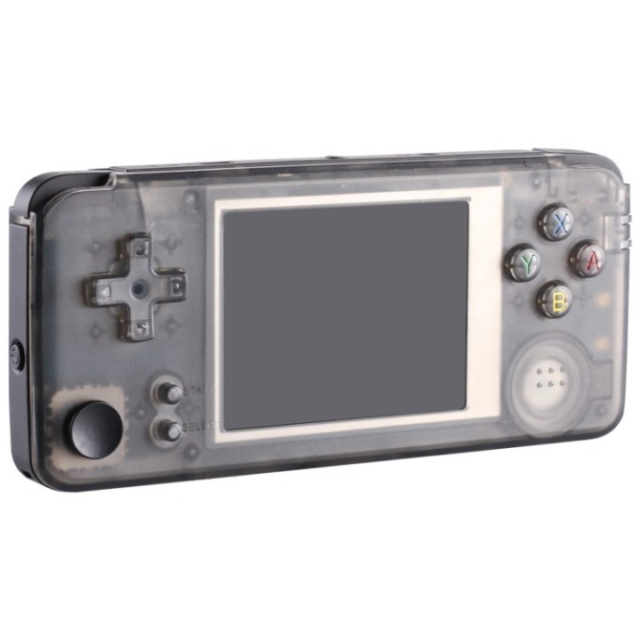
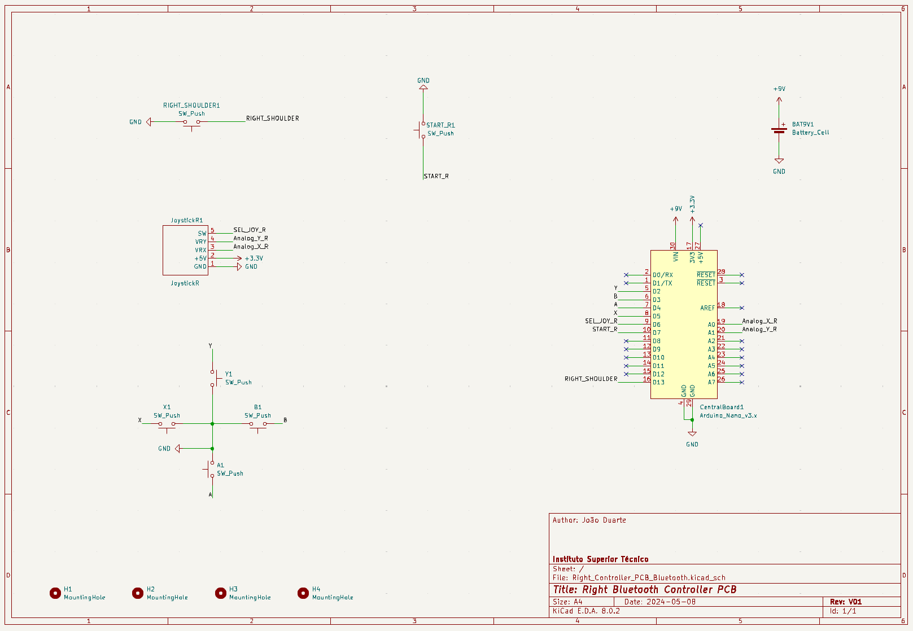
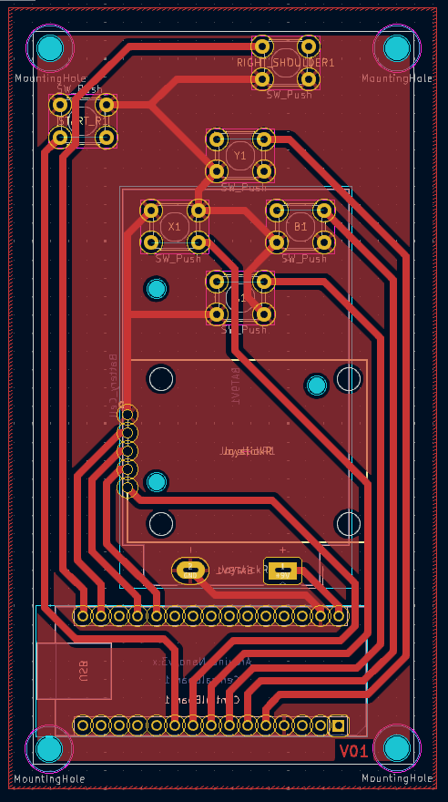

Product
An ergonomic console to play all your favorite retro games on the go!
About
This project is from a group of 6 students from Instituto Superior Técnico (IST). They were challenged to do a project and decided to do one on a portable game console based on MiSTer FPGA for the curricular unit "Integrated Project in Electronics Engineering". The project is funded entirely by IST.
Planning
We are currently on Phase 2 of the project!
Blog
This is our latest post on the blog:
Right Bluetooth Controller's PCB finished!(08/05/2024):
[João D.]
The Right Bluetooth Controller's PCB is now finished
and can be found in the
GitHub page.
This link can also be found in the
Downloads and Useful Links tab.
Here's a photo of the Schematic:

And the Layout:

Also corrected the Left Controller's Gerber files because they were plotted without the Back Silkscreen.